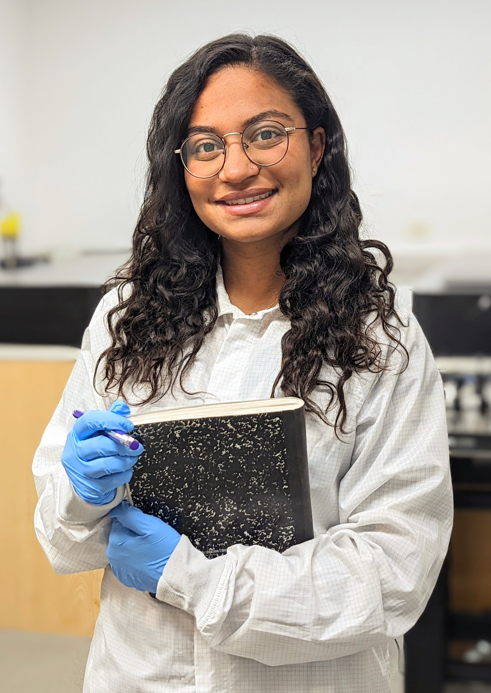

Niyati wins 1st place in the 3 Minute Thesis Competition.
"Meet the Goldiloxs!"
Read Article Watch Video I'm a final year PhD student pursuing a Ph.D. in Aeospace Engineering at the California Institute of Technology. My research in the Exoplanet Technology Lab, advised by Professor Dimitri Mawet, focuses on astronomical instrumentation. Read more about my research here.
I grew up on Long Island, New York where I grew to love Star Trek, reading, and playing soccer--three pastimes which I still enjoy very much! I went on to earn a double Bachelors of Science in Physics and in Aerospace Engineering from M.I.T. in 2019.
I received my Masters in Aerospace Engineering from the Graduate Aerospace Laboratories at the California Institute of Technology in 2020. I am actively involved in campus organizations including outreach with Caltech Astronomy and Women in GALCIT. I also enjoy playing pickup soccer and volleyball within the Caltech community."Meet the Goldiloxs!"
Read Article Watch Video
Niyati was named a KISS Affiliate in 2021. Recently she was chosen as the official Student Liason and hosts the Keck Lectures. Check out the event series for upcoming public talks!
Read moreI enjoy volunteer mentoring, tutoring, and camp counseloring young kids to inspire them for future careers in STEM.
My favorite outreach efforts are public talks, panels and telescope stargazing with the general public through Caltech Astronomy.
Learn more